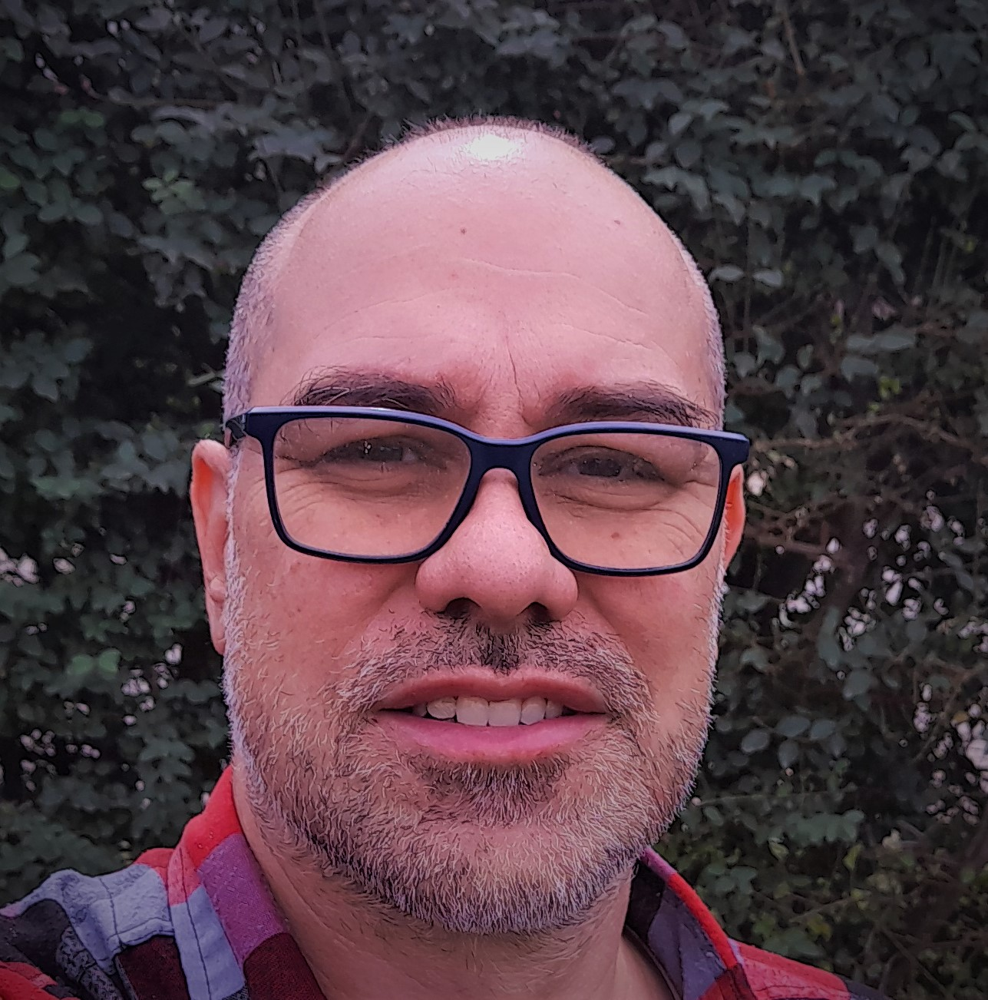

Gabriel Hernán Campi | WDD 130
Hello! I am Gabriel Campi and I live in Córdoba, Argentina, but I was born in another city called Paraná. I am a husband and father of three children. I am also a member of The Church of Jesus Christ of Latter-day Saints. I work as an appliance repairman but I want to learn how to program and design web pages. One of the things I enjoy the most is traveling with my family around the country and spending time with them and I fascinates me is riding my motorcycle.One of the things that led me to study this career is the desire to invent and create new things. I have a strong passion for innovation a curiosity that drives me to explore new ideas. By pursuing this career, I hope to channel this drive into a meaningful and fulfilling profession."